後半はグローバル・コモン４で埋め尽くされることになりそうですが、あまりにも沢山のパビリオンに入ったので少々記憶が曖昧になっている箇所もあるかと思います。かぼちゃのメモリー容量はこんなもの…と許してやってください。（＾。＾；
また私的な好みの写真が多くなっていますが、女性には楽しいかな…？なんて思ったりしています。
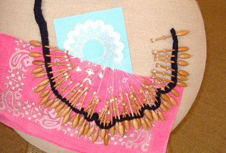
で、早速なんですがコモン４で先ずみつけたのが、どこかのパビリオンの入り口で若い女性が編んでいたこのレースです。
多分リトアニア館だと思うのですが、パビリオンの隣にこのレースだけの小さな展示場があり、どれもこれもほんとうに素敵で自分で編んでみたいと思いました。
ボーリングのピンのような形をした木の糸巻きに、ミシン糸よりももっと細い糸を巻きつけたものを何本か使って、水色の紙の上に置いてあるようなレースが編まれていくのです。
半分に折ったピンクのハンカチで大きさがおわかりと思いますが、これだけの数の糸巻きを使ってこの大きさですから、素晴らしく繊細なものです。
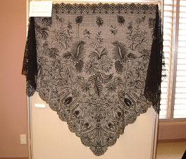
私も挑戦させてもらいましたが編み方はそんなに難しいものではありませんが、あまりにも細かいのでもし失敗をしても、どこから間違えていたのか老眼鏡をかけても解らないかもしれません。（＾∞＾；
展示品にはハンカチに縁取りをしたものから大きなウェディングベールなどがあり、このショールのように値段のついているものもありました。（価格は忘れました）
日本の万博に参加するのは初めてという【リトアニア館】は、巻いてあったフィルムが解けたようならせん状のスクリーンを館内いっぱいに張り巡らせ、そこに歴史や風景の映像が映し出されるというユニークなデザインが施されており、私たちが変なところから出てきたのか、それが正規の出口だったのか障害物をくぐったり跨いだりして外に出てきました。（＾ｖ＾；
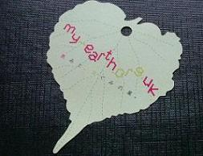
その隣にあったのが【イギリス館】で、ここではちょっと並びましたが、入り口から一歩足を踏み入れると４０本植えてあるというライムの木と何種類かの花々で飾られた美しい庭園になっており、所々に配置されたアート作品をみつけながら先へ進んで行くと、３～４種類の木の葉のシールが沢山壁に掛かってたので「もらえるものならば何でも…」と一枚いただいてきました。
庭園から屋内に入った部屋の壁がこれまた木の葉の模様になっており、その木の葉から灯りが入ってくるというおしゃれな物で、よくよく見てみるとその葉っぱが手に持っているものと同じような大きさで、かたちもさっき見てきた他の物と同じようなので、シールはこの壁からくり抜かれた物だと気がつきました。
後になって知ったのですが、このシールは毎日２５０枚ほど用意されているのだそうです。
次の部屋には大人も子供も楽しめるようなコーナーがあり、自然の営みや動物たちが備え持っている力の仕組みを体験できるようになっていて、私も勿論団扇を扇いだりして楽しんで来ました。
出口には鳥の巣箱のようなものがランダムな高さで並んで掛けてあり、中を覗いてみるといろいろな風景写真が見え、これまた三人が並んで中腰になったり立ったりして横にずれていく様は、傍から見ているとちょっと笑えたかもしれません。
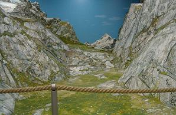
その隣に並んでいるオーストリア館は長い長い行列ができていたのでパスし、それよりちょっとだけ行列が短かった大きな赤い文字（しかも日本語！）で
『山』
と、テーマを掲げた【スイス館】に並びました。
ここでは入り口でスイス軍が使用しているというポケットランプ（懐中電灯）を改造して、展示品の近くにあるセンサーに光を当てると音声ガイドが流れているという、インスタント・カメラくらいの大きさの優れものを片手に館内を巡ります
ポケットランプの使用法を説明してもらって、開けられたドアを入るともうひとつ先にドアのある小さな部屋に閉じ込められますが、やがて登山電車（だったと思います）の音が聞こえてきて、電車でやって来たという心憎いまでの演出で次のドアが開かれます。
山に携わる五つのテーマとしてスイスの神話にはじまり、実に細かく展示・説明がされており、ついついどれもこれも真面目に見聞してしまい、どこからかハイジが子羊を追って出てきそうな山々を眺めながらタマネギさんとジャガイモさんが退屈そうに待っていました。（＾ε＾；
その後はスンナリ入れそうなところを選んで入ったので、もう順番はぐちゃぐちゃですが、【チェコ館】は『ファンタジーと音楽の庭園』とうたっているだけに、見て・聞いて・触って・楽しめるという感じで、マンホールのような円形の通路を入っていくと大きな目玉があったり、水に音を振動させるウオーターピアノがあったり、水の万華鏡、木琴ならぬ石琴なんてのもあって、聞くところによりますとどこぞのお爺さんが叩いていて一枚を割ってしまい、取り急ぎ新しい物と交換したとか…
お子様連れで訪れるには最適だと思います。
中には訳の解らないものもありましたが、こういうものは案外子供たちがさっさと理解していたりするのかもしれません。
子供が喜ぶと言えば【ベルギー館】で、ここでは入口でひとり１コずつLotusというベルギーの老舗メーカーのクッキーがいただけます。
弓なりに湾曲した大きなスクリーンが三つ、裏面が壁になってジグザグに備え付けられており、どれも移動するボートかヘリコプターにでも乗っているかのように風景が流れ、しばしうっとりと映像の世界に浸り込んでいたかったのですが、友人たちにはあまり興味がなかったようでとっとと出口へ…後になって知ったのですが、このシアターか手前にある絵にはちょっとした仕掛けがあったそうで、これからお出掛けになる方はほんの少し時間をかけて見てくることをお勧めします。
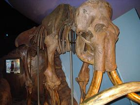
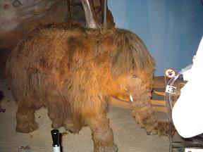
コモン４で一番大きい建物が【ロシア館】です。
ここには骨格標本になってしまっていますが全身が揃っている大人のマンモスと、子供のマンモスがおり、訪れた人々が我も我もとマンモスとのツーショットを撮っていますが、なんとか間隙をついてこの写真を撮ることができました。
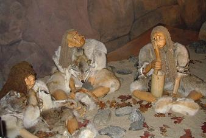
このマンモスの隣には、岩穴のような当時の住居を再現してこんな素朴な人形たちが住んでいました。→
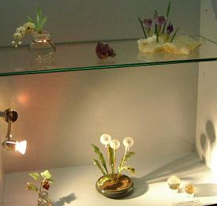
←また、バイカル湖で採掘される鉱物が沢山展示されており、デコボコとした石にはあまり興味はなかったのですが、この宝石細工の前では思わず足が止まってしまいました。（＾。＾；
なんといっても材料は紫水晶などの宝石ですから、どれもそんなに大きなものではなく、中央下の真ん中にあるのが高さ１０cmくらいでしょうか…
私はこんな小さい飾り物が好きで、別に宝石でなくったってガラスでもいいのですが、飾るような家でもないのでガラス細工のお店で
「いいなぁ…」
と眺めるだけで満足しています。（・￢・
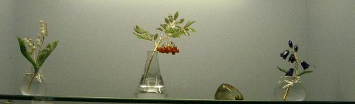
ご覧下さいこの素晴らしい工芸品を…
え？アクセサリーじゃないから見ても楽しくないって？
ご安心下さい。万博開場にお出掛けになればあちこちの外国館で宝石のアクセサリーが売られております。（笑）
流石に広いだけあって、宇宙航空機ツポレフ２０００や再使用可能な宇宙船コスモポリスＣ－２１のシュミレーターなどが展示されており、コスモポリスは乗って宇宙旅行を体験できるとか…
勿論私も乗って…って、いい年のオバサンが子供たちを押しのけてそんなことできませんよ。（＞＜；
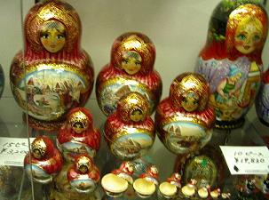
他にもいろいろありましたが、私の目を引いたのは出口付近の売店に置いてあった『マトリョーシカ』で、写真右端のグリーンのショールを被っている物が１０ピースで１９８２０円で、赤い１５ピースのものが３２００円って、なんだかちょっと不思議な気がするんですが、細工や塗料などが違うんでしょうね…
『デフォルト焼』の白地に青の彩色を施したタイルで外観正面を飾った【オランダ館】は、横壁面から飛び出している巨大なチューリップ群が目を引きます。
このデフォルト焼はオランダでは有名な陶器なのだそうで、お皿や花瓶などに模様を描いた独特な青は『デフォルト・ブルー』と呼ばれています。
また、『ミッフィーちゃん』の生みの親であるディック・ブルーナさんがオランダの方なのだそうで（知らなかった…）、パビリオン前には大人よりも大きなミッフィーちゃんが立っており、子供たちが入れ替わり立ち代り写真を撮ってもらっていました。
ちなみに、ミッフィーちゃんは今年で５０歳になったのだそうです。（＾‐＾；
館内には床いっぱいに大きな池が作ってあり、真ん中に天井から四角い行灯のような物が吊るされて、その行灯から池に一滴の水滴が落ちて波紋が広がるところから水の国オランダの映像が足元に映し出されますが、なんとなく日本的と感じたのは私だけでしょうか…
【北欧共同館】は、アイスランド共和国・スウェーデン王国・デンマーク王国・ノルウェー王国・フィンランド共和国の五カ国が集まったパビリオンで、フィンランドの杉の一種で作った通路をループ状に下るようになっており、車椅子が動きやすいように配慮された傾斜になっているのだそうです。
ここでは５カ国それぞれのオーロラの映像が見られ、メッセージを書いた折り紙で船を折って小さな湖に浮かべるようになっていました。
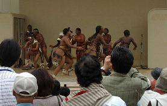
ぶらぶらと歩いてお隣のコモン５へ…
【アフリカ共同館】と【南アフリカ共同館】がコの字型になっており、グローバル・コモンの中では一番規模が広いアフリカ館には、貝殻で作ったネックレスやお祭りにでも使うかのようなお面だとか、バナナの葉で作ったキリンの人形、木工細工物などなどが売られており、まるで市場のように賑やかで、じっくり見ていたらあれもこれもと買いたくなりそうです。
南アフリカ館の方はちょっと記憶が薄いのですが、こちらもやっぱりいくつかのブースに分かれており、アフリカ館に比べると静かだったような気がします。（＾▽＾；
近くにあったステージでは、皮のスカートのような物を身につけた逞しそうな男女が、狩りのダンスでしょうか…エキサイティングな声を張り上げて踊っているのも見ることができラッキーでした。
今回の食事は、ちょっと早めの昼食として日本ゾーンのアサヒパノラマレストラン下にあるサンライズという、ファーストフード店が並んでいるところでフツーのスパゲッティを食べました。
万博に来てスパゲッティかい…Ψ(＾～＾；
「アフリカ料理は？」
(((.. )( ..)))ブン！ブン！
「韓国料理は？」
(((xx )( xx)))イヤ！イヤ！
なによう、外国の料理を食べよう…なんて言っといてワガママおばちゃまめ！（笑）
なんてことで、コモン５の『リストランテ ドルチェ イタリア』でイタメシコースを食べることになりました。
スタッフはほとんどが日本人のバイトのようでしたが、シェフは★★★だか★★★★だかのイタリア一流レストランの方だそうで、これはイケました。
帰りがけに企業パビリオンBの『真珠満味』という、軽食物っぽいお店で品切れの多いメニューの中からうどんを食べ、お腹をいっぱいにしてリニモに乗りました。
末筆になりましたが全期間入場券を入手して、すっかり常連さんになってしまったスイカさんよりこんなメールも届いています。
∽∽∽∽∽∽∽∽∽∽∽∽∽∽∽∽∽∽∽∽∽∽∽∽∽∽∽∽∽∽∽∽∽∽∽∽∽
アルゼンチン館はタンゴ・ダンスがとても気に入りました。
これから行かれる人にはお勧めですョ♪
∽∽∽∽∽∽∽∽∽∽∽∽∽∽∽∽∽∽∽∽∽∽∽∽∽∽∽∽∽∽∽∽∽∽∽∽∽